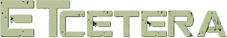
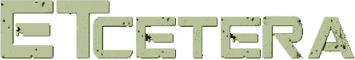

O Misterio do Cristal Vermelho e as Revelações Cósmicas
Ei, pessoal! Hoje é um daqueles dias incríveis em que tudo o que eu acreditava se torna realidade, 28/12/2003
Bem, algo extraordinário aconteceu comigo recentemente, e estou superanimado para compartilhar com vocês.
Aconteceu enquanto eu estava explorando uma área remota, em busca de sinais de atividade extraterrestre. Acreditem ou não, encontrei um cristal! Um misterioso cristal vermelho tão vibrante que parecia emitir uma energia cósmica incrível. Não há palavras para descrever a sensação que tive ao segurá-lo. Parecia que ele tinha uma espécie de comunicação comigo.
Desde então, este cristal tornou-se o epicentro das minhas investigações. O mais surpreendente é que ele parece estar me conduzindo a um lugar completamente desconhecido. Não consigo explicar totalmente como, mas sinto como se estivesse recebendo mensagens ou visões desse lugar enquanto medito com o cristal.
As visões são surreais! Paisagens extraterrestres deslumbrantes, cores que nem mesmo podemos imaginar aqui na Terra e seres que emanam uma energia de amor e sabedoria incomparáveis. Acredito que esse cristal é uma espécie de portal, uma ligação entre nosso mundo e essas realidades desconhecidas.
Estou compilando todas as informações que recebo dessas experiências em um diário. Cada vez que mergulho na meditação com o cristal, mais detalhes surgem sobre este lugar incrível e as mensagens que parecem ecoar em minha mente. É fascinante e um pouco assustador, admito, mas sinto uma conexão muito profunda com tudo isso.
Compartilhar isso com vocês é fundamental para mim. Sei que muitos podem considerar isso loucura ou pura fantasia, mas minha intuição diz que este é um marco na história da humanidade. Estamos nos aproximando de uma compreensão mais profunda do universo e de nossas origens.
Desde que encontrei esse cristal, tenho me dedicado intensamente a compreender sua natureza e suas possíveis origens. Faço pesquisas incessantes, buscando conexões em antigas escrituras, relatos de avistamentos de OVNIs e até mesmo em teorias científicas que tangenciam a existência de realidades paralelas. Cada nova informação parece se encaixar de alguma forma, como se o universo estivesse sussurrando segredos que estavam ocultos por eras.
Prometo manter todos informados sobre cada revelação e descoberta que surgir dessa jornada. Enquanto isso, convido vocês a pensarem sobre o que pode existir além das fronteiras do que conhecemos. Quem sabe, talvez este cristal seja a chave para desvendar os mistérios do cosmos!

TerraPlanaET_666
Ei, você aí! Cansado das mesmas teorias entediantes sobre aliens? Então prepare-se para conhecer a minha visão alternativa do universo. Embarque nessa aventura intergaláctica regada de humor, ficção científica e muitas perguntas sem resposta. Pronto para a jornada da sua vida?

TerraPlanaET_666
Ei, você aí! Cansado das mesmas teorias entediantes sobre aliens? Então prepare-se para conhecer a minha visão alternativa do universo. Embarque nessa aventura intergaláctica regada de humor, ficção científica e muitas perguntas sem resposta. Pronto para a jornada da sua vida?